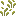
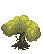
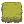

DRAGON HOOD · ROGUE ADVENTURE FOLIAGE STUDY
Layered grass, in the RA palette.
Four cutout-plane treatments. Each patch sits beside the current hedge wall, at the same world scale. Static foliage throughout.

Native RA grass16×16 source crop from RA Jungle. Broken, branching blade silhouette.
RA foliage referenceDark olive body, clustered light crowns, sparse yellow highlights.
Current foliage paletteExisting clipped-hedge sprite; the wall below uses the shipping 3D mesh.
Grass 18–24 units tall · current hedge wall 6 units tall · cell 32 units
At normal game pixel scale
One 32 px cell of grass beside one cell of hedge wall. No smoothing or enlargement.
The hedge comparison calls the current WallMaterials.geometry / prepare with the RA olive palette: 16-unit thickness, 6-unit height. Grass uses alpha-tested planes and nearest-neighbour pixels, with no solid block or sway. Gaps in the lighter options intentionally remain visible so concealment can be assessed. Character and chest are scale placeholders. Counts exclude ground, hedge and props.
References: Rogue Adventure World, ElvGames. Native grass source: RA_Jungle.png [112,496,16,16]. Existing RA tree crop and olive hedge derivative are local project assets. Review only; no game rendering changes.